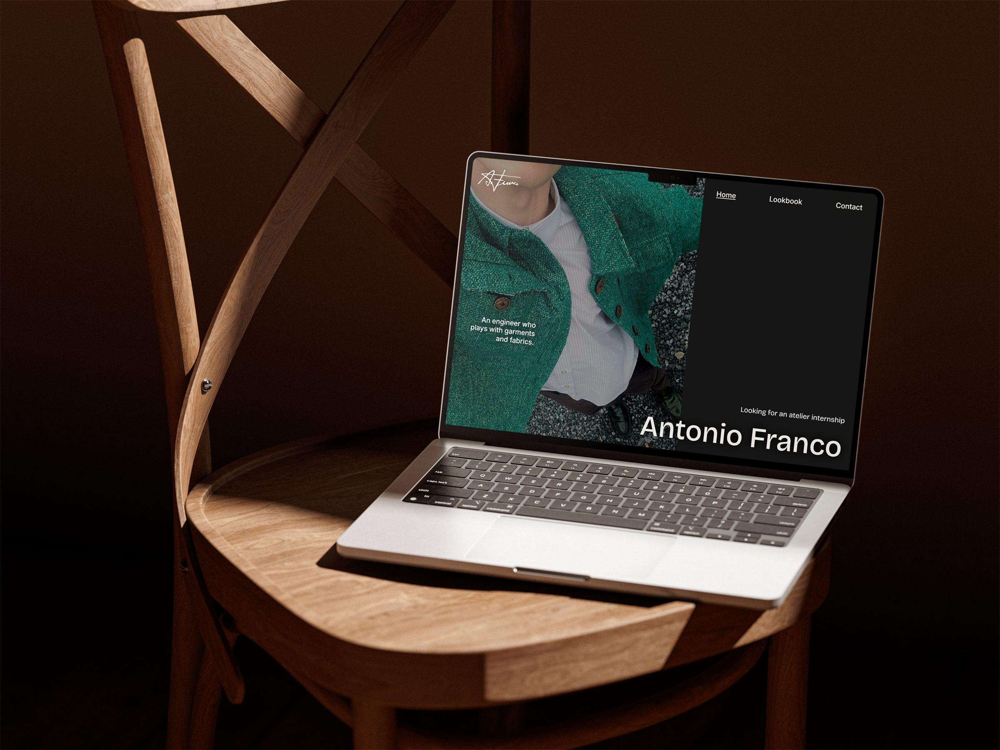

Antonio Franco — Fashion portfolio

Role
Web design, Art direction, Front-end
Type
Client project · Portfolio website
Year
2026
Tools
Figma, HTML, CSS, JavaScript
A portfolio website for Antonio Franco, an industrial engineering student who makes garments and is looking for an atelier internship. The site presents eight pieces, two of his own patterns and six technical studies after garments he admires, to people who read clothes for a living, so the work, the process and the reasoning behind each piece had to be easy to follow.

An engineer's voice. The copy is written in Antonio's own words: how he started, how he works and what he still wants to learn. The home page tells that story in three short sections, next to photographs of the garments being made and worn.
A quiet frame. A warm off-white background, a restrained sans-serif and a handwritten signature as the logo keep the attention on fabric and construction. Every page shares the same header, spacing and grid.


The lookbook. The eight pieces can be browsed as a grid of images or as a list with the year and whether each is his own pattern or a study after a designer, from a crossbody bag to a long coat after Saint Laurent that is still in progress.
One page per piece. Each garment has its own page: the brief, how the pattern was drawn or adapted, a spec sheet with reference, materials and build time, what went wrong, what he learned and what he would do differently.


Getting in touch. The contact page says it plainly: available immediately, for a design studio or a tailoring atelier, in any city and for any duration, in Spanish and English.


The result is a small, focused site that works as a portfolio and a CV at once, built so that a workshop can see in a few minutes how Antonio thinks about pattern, cloth and construction.